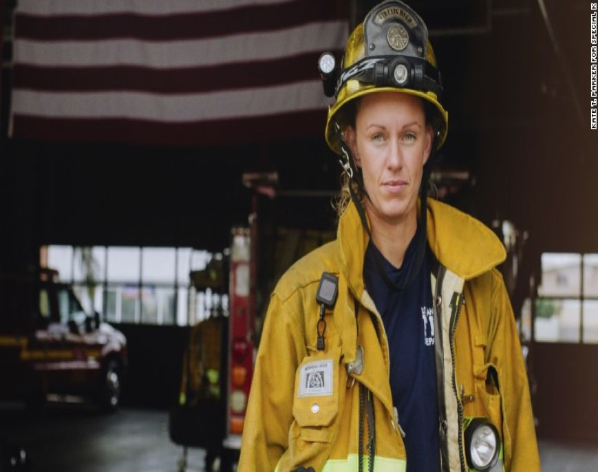
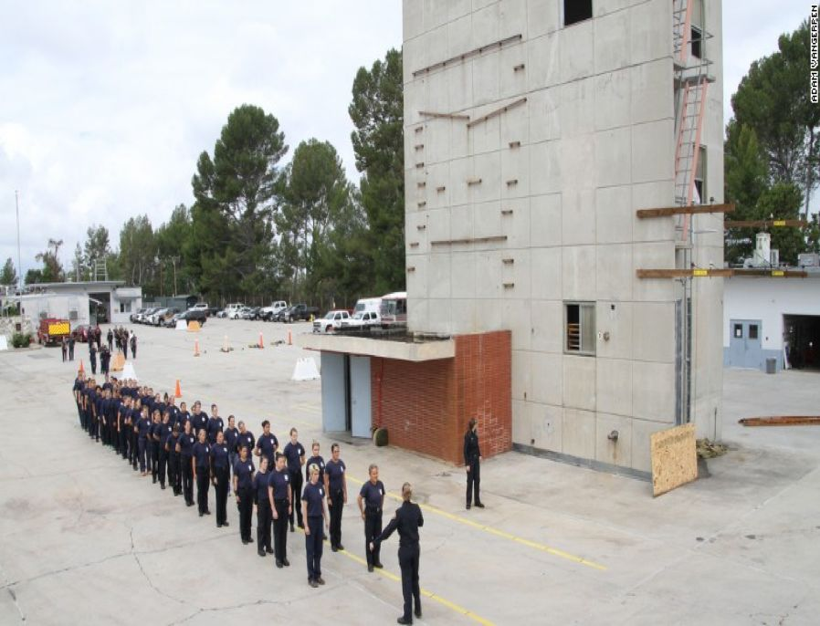
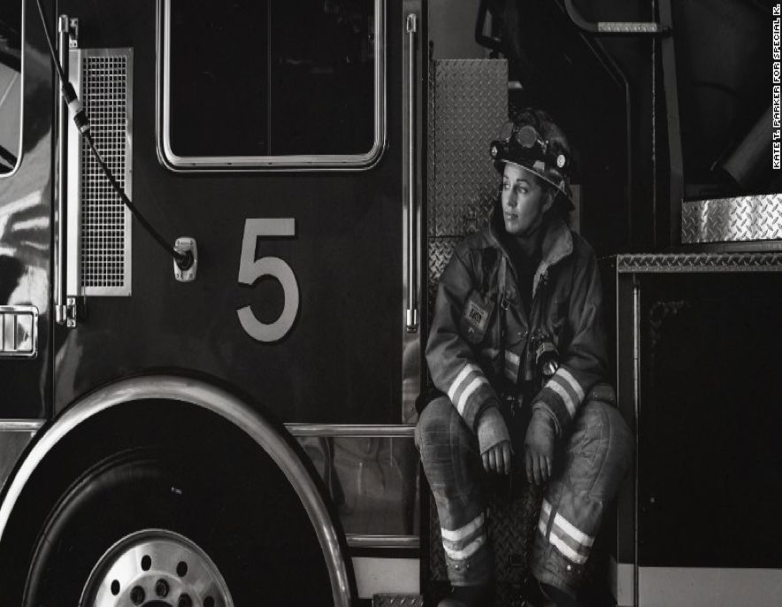
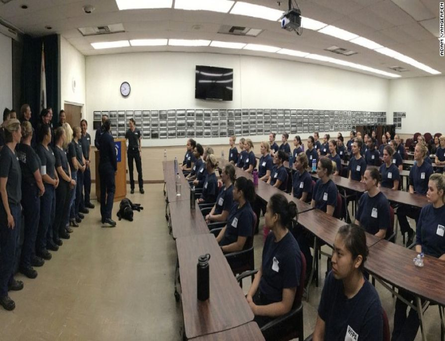

编者按：女性要争取进入更多的职业领域，拓宽选择的可能。
洛杉矶消防局有4000名消防员，Erin Regan是其中38名女性消防员之一。而且Erin Regan曾是从事这项工作的唯一的女性，虽然这并没有给她带来什么不便，但这个事实不断地提醒着人们，消防依然是一个男性占绝对主导的职业领域。根据国家消防协会的调查，全美有超过110万名消防员，但其中只有7%是女性。“我知道到消防并非适合每个女孩，但是大多数女孩从未想过这是她们可能从事的一种职业”，ErinRegan说到，“我想改变这个现状。”

（Erin Regan，洛杉矶消防局的38名女消防员之一）
Regan成为消防员已经八年了，去年她联合所在部门的其他几位女性消防员一起开创了一个名为“女孩消防营”的计划。50名14至18岁的女孩参加了这个为期一天的活动。她们跟随着Regan和她的同事，进行了类似的训练，观看了培训视频并且了解了消防设备。
“我们消防局之前从未做过这样的事，但我觉得确实是时候这么做了，”Regan说到，“这不是一项招聘活动。我们只是想进行一种可能性教育。她们需要知道虽然你是个女孩但你也可以从事这项工作。”Regan希望通过训练营的成功举办，让自己的努力更进一步，从而招募到那些可能从事消防工作的女孩。

（女子消防预备学院的第一堂课）
Regan与消防局合作启动了第二个名为“女子消防预备学院”的项目，该项目由洛杉矶的几位女性消防员领导。这个为期8周的项目每个月开课两次，主要针对18岁或以上的高中毕业的女孩。在项目开始的第一天，有超过100名女孩参加，最终其中60名入选。Regan从Kellogg's（家乐氏公司，全球知名谷物早餐和零食制造商）那里获得了1万美金用于支持这个项目，她说，“我简直欣喜若狂。”

（Erin Regan）
女孩们经历了4到5小时的严格训练任务，以帮助她们准备正式的消防员测试。上个月有50名女性从就职班毕业。Regan很乐观，她认为这些毕业生最终会推进她们自己成为消防员的计划。她说：“我们不应该仅仅为提高她们在消防队伍中的比例而雇佣更多女性。但是总的来说，培养多样化的劳动力以支持女性在消防事业中的长久发展和进步是很重要的。”
消防并非是Regan的童年梦想。她在大学主修的是艺术和平面设计，后来成为一名职业的足球运动员。但是致力于公共服务是一项家庭传统，Regan说到，“我的祖母是她们警局的第一位女警官。她不得不穿裙子，还要把枪装在手提包里。而她的母亲则是一位警察调度员。”Regan在2003年离开球队，并开始认真思考成为一名消防员。

（女子消防学院班）
Regan说：“家人和朋友都说我的运动员经历可能有助于我从事消防工作。”五年之后，她被洛杉矶城消防学院录取。这是一个由40名新兵组成的班级，其中只有4名女性。“我们女性只有这么几个人，但其他人都平等地对待我，因为Ta们知道我付出了跟Ta们一样的努力才站到了这里”，Regan提到，自己体重150磅，每天都必须携带将近100磅重的设备。
“消防是一种使命。它不应该只被限定于某一种性别里，”她说，“做这项工作永远不会让我致富，但我是在为人们服务，还也许可以挽救生命。”
首次发布于2016年6月7日，美东时间上午7:49。
来源：CNN
作者：Parija Kavilanz
原文链接：
https://money.cnn.com/2016/06/07/smallbusiness/female-firefighter-erin-regan/index.html
翻译： Karen
校对： 白纸
我国女消防员现状：2019年1月24日，应急管理部发布首批3万人消防员招录计划，面向社会公开招录18665名，其中女性20名（招录地区为北京）。
相关链接：
http://xfyzl.jieyundata.com/cms/page/5c122c3fc0534585b5d2135f3b27ec76.html?id=0409d4997b1641b2b973d494ddb148df